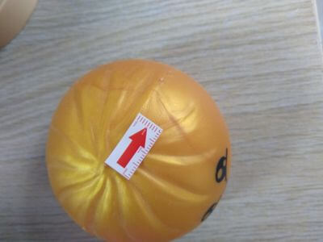
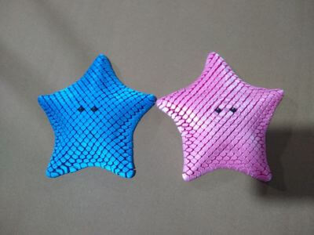

Real-world product inspection cases from multiple industries — see how we identify and resolve quality issues for our clients.
View Cases
Curated factory resources to help you quickly find qualified supplier partners and reduce sourcing risks.
View FactoriesStay informed with the latest QC industry trends, regulatory changes, company news and technology insights.
View Updates